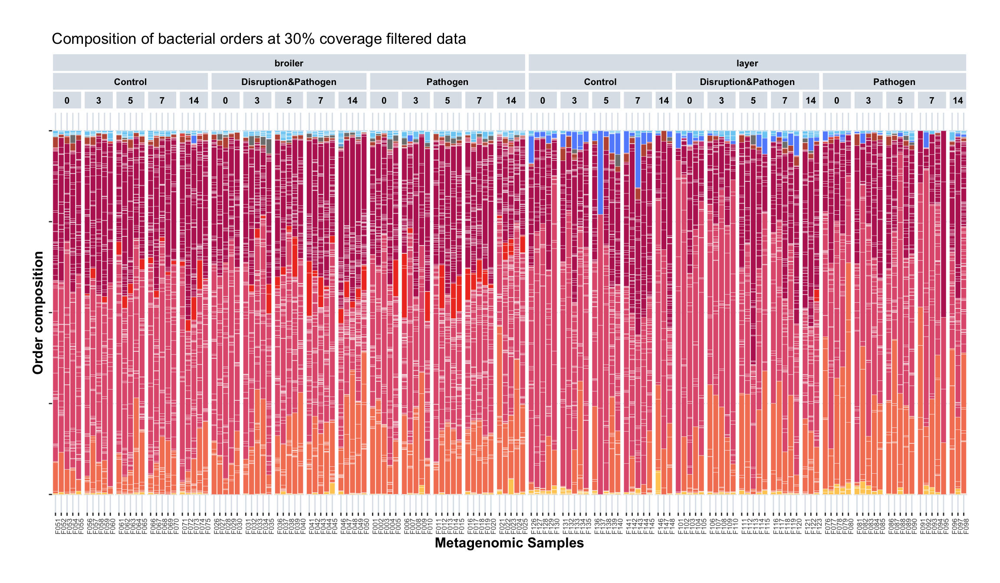
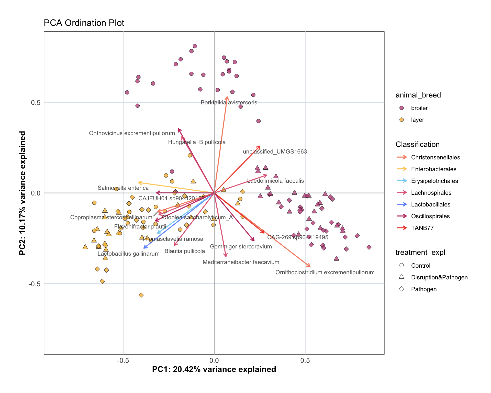
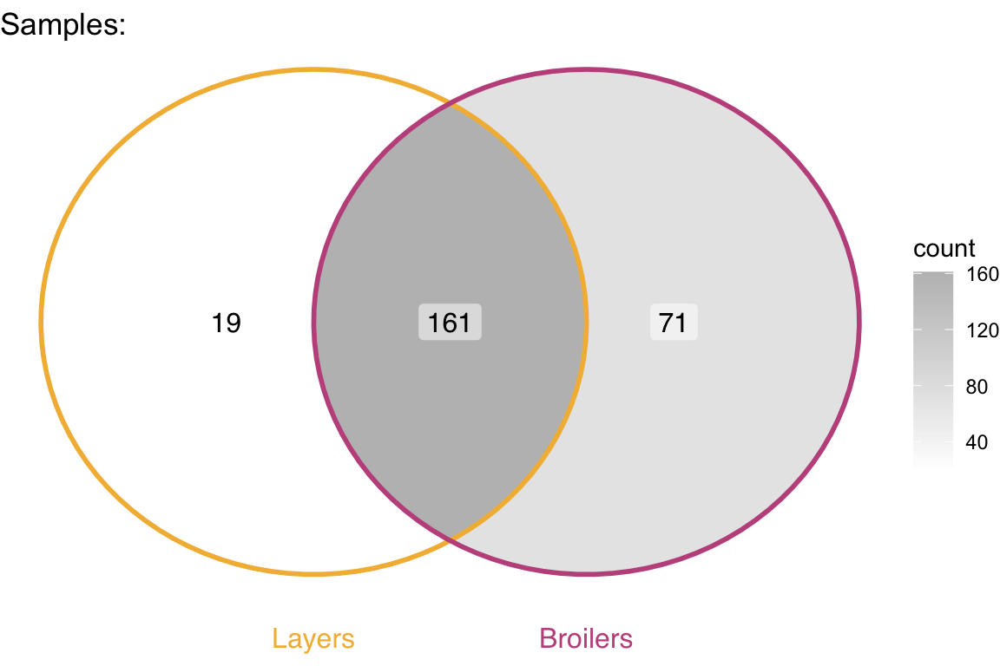
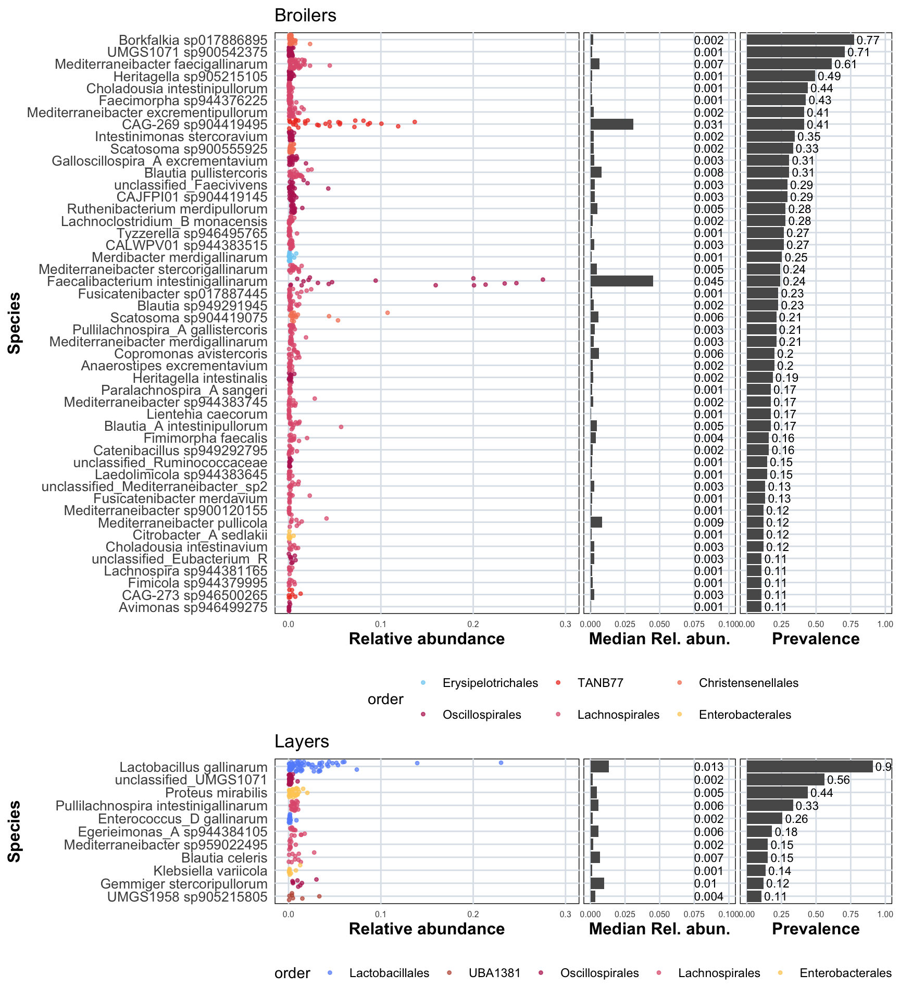
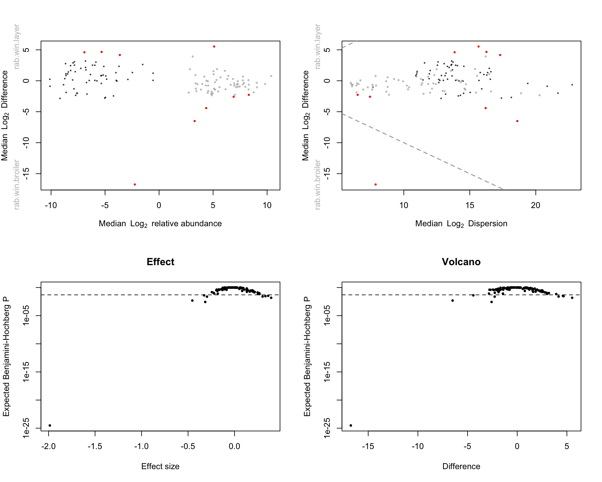
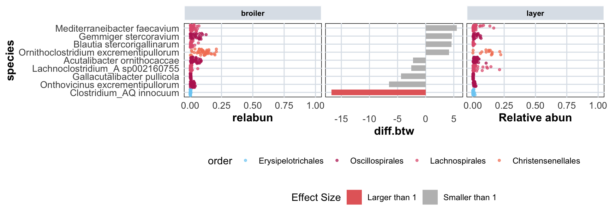
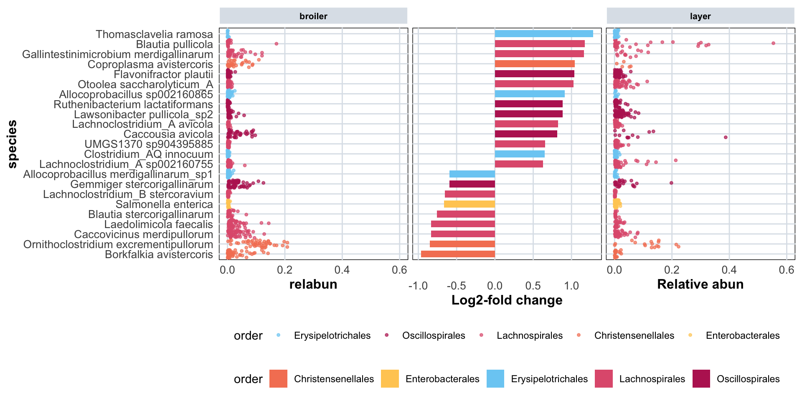
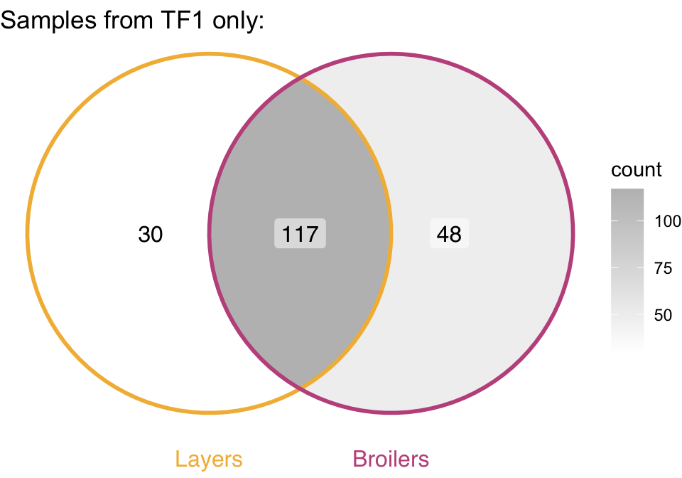
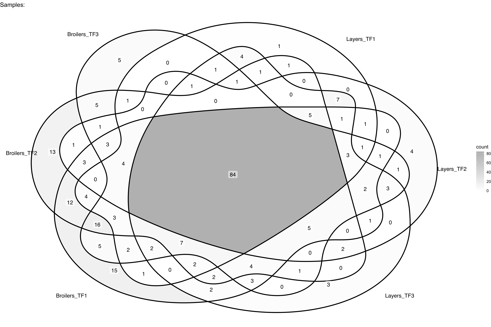

10 Beta Diversity Analysis - Between Breeds
10.2 Composition Barplots
This section shows the composition of bacterial orders across samples, visualized as stacked barplots.
# Create stacked barplot showing order-level composition for each sample
# Colors represent different bacterial orders
tidy_plot_genome_counts_filt_30_macro_closed %>%
filter(treatment != "TF0") %>%
ggplot(aes(x = animal , y = count, fill = order)) +
geom_bar(stat="identity", colour="white", linewidth=0.1) + #plot stacked bars with white borders
scale_fill_manual(values = order_colors[-4], drop = FALSE) +
labs(x = "Metagenomic Samples", y = "Order composition",fill = "Read type") +
facet_nested(. ~ animal_breed + treatment_expl + age, scales = "free", space = "free") +
custom_ggplot_theme +
theme(axis.text.x = element_text(angle = 90, hjust = 1, size = 6),
axis.text.y = element_blank(),
legend.position = "none") +
ggtitle("Composition of bacterial orders at 30% coverage filtered data")
10.3 Layer vs Broiler Composition
This section analyzes compositional differences between layer and broiler breeds using Principal Component Analysis (PCA) and PERMANOVA statistical tests.
10.3.1 PCA
10.3.1.1 Prepare Data for PCA
# Prepare wide format data frame for PCA analysis
# Convert from tidy format to wide format with samples as rows and genomes as columns
df_wide <- tidy_plot_genome_counts_filt_30_macro_closed %>%
filter(type_simple == "P") %>% # Only positive samples (exclude negative controls)
# Remove metadata columns, keep only genome counts
select(genome, microsample, count) %>%
# Convert to wide format: one column per genome
pivot_wider(
names_from = genome,
values_from = count,
values_fill = 0 # Fill missing values with 0
) %>%
# Remove genomes (columns) that have zero counts in all samples
select(where(~ any(. != 0))) %>%
# Scale each sample to 100% (closure operation - common for compositional data)
mutate(across(-microsample, ~ . / rowSums(across(where(is.numeric))) * 100 )) %>%
# Convert microsample column to row names
column_to_rownames(var = "microsample")
# Report zero count statistics
cat("Number of zeros:", sum(df_wide == 0), "\n")Number of zeros: 24728 % of zeros: 68.41523 # Remove taxa present in fewer than 30 samples and samples with fewer than 10 taxa
# This ensures sufficient data for compositional analysis
df_wide <- remove_samples_or_taxa(
df = df_wide,
min_samples_per_taxon = 30,
min_taxa_per_sample = 10
)Initial df: Rows (samples): 144 , Columns (taxa): 251
Removed: Rows (samples): 2 , Columns (taxa): 129
Resulting df: Rows (samples): 142 , Columns (taxa): 122 # Report zero count statistics after filtering
cat("Number of zeros after filtering:", sum(df_wide == 0), "\n")Number of zeros after filtering: 7562 % of zeros after filtering: 43.65043 10.3.1.2 Perform PCA
# Perform PCA with zero replacement, centering, scaling, and CLR transformation
# This handles compositional data appropriately
pca_result <- perform_pca(df_wide, z_delete = TRUE)[1] "Zeros found"No. adjusted imputations: 6121
Rows (samples) removed after zero replacement: 4
Columns (taxa) removed after zero replacement: 0 10.3.1.3 PCA Ordination Plot
# Create PCA ordination plot showing sample composition differences
# Samples colored by breed, shaped by treatment
# Arrows (loadings) show which bacterial taxa contribute most to principal components
p <- plot_pca(
pca_result$pca_result,
samples_color_metadata = "animal_breed", # Color by breed (layer vs broiler)
samples_shape_metadata = "treatment_expl", # Shape by treatment
samples_color_value = c('#c1558b', "#F3B942"), # Color scheme for breeds
loadings_color_metadata = "order", # Color loadings by taxonomic order
loadings_color_value = order_colors,
loadings_taxon_level = "species", # Label loadings with species names
sample_metadata = MACRO_sample_metadata,
genome_metadata = genome_metadata, # For taxonomic information on loadings
order_colors = order_colors,
custom_ggplot_theme = custom_ggplot_theme,
scaling_factor_value = 1.7, # Scaling factor for loading arrows
loadings_number = 17 # Number of top loadings to display
)
# Display the plot
p
### PERMANOVAPERMANOVA (Permutational Multivariate Analysis of Variance) tests whether microbial community composition differs significantly between groups (breed and treatment).
10.3.1.4 PERMANOVA: Breed and Treatment Effects
# Calculate Euclidean distance matrix on CLR-transformed data
# CLR transformation makes the data suitable for Euclidean distance calculations
pca_animals_dist_matrix <- vegdist(pca_result$df_clr_dist, method = "euclidean")
# Align metadata with distance matrix samples
# Ensure filtered metadata matches samples used in PCA
pca_animals_metadata_adonis <- plot_data_stats_macro %>%
filter(microsample %in% rownames(pca_result$df_clr_dist)) %>%
arrange(match(microsample, rownames(pca_result$df_clr_dist))) %>%
select(microsample, animal_breed, treatment, age)
# Verify that metadata and distance matrix samples are aligned
stopifnot(all(pca_animals_metadata_adonis$microsample == rownames(pca_result$df_clr_dist)))# Run PERMANOVA to test effects of breed and treatment on community composition
# Using 999 permutations for statistical significance testing
adonis2_result_breed_treatment <- adonis2(
pca_animals_dist_matrix ~ animal_breed + treatment,
data = pca_animals_metadata_adonis,
permutations = 999,
by = "terms" # Test each term separately
)
# Display PERMANOVA results as formatted table
# Convert to data frame and format for display
adonis2_table <- as.data.frame(adonis2_result_breed_treatment)
knitr::kable(adonis2_table, digits = 4, caption = "PERMANOVA results: Effects of breed and treatment on beta diversity")| Df | SumOfSqs | R2 | F | Pr(>F) | |
|---|---|---|---|---|---|
| animal_breed | 1 | 3468.800 | 0.1437 | 26.0242 | 0.001 |
| treatment | 2 | 2813.894 | 0.1165 | 10.5554 | 0.001 |
| Residual | 134 | 17861.008 | 0.7398 | NA | NA |
| Total | 137 | 24143.702 | 1.0000 | NA | NA |
10.3.1.5 PERMANOVA: Breed, Treatment, and Age Effects
# Recalculate distance matrix (same as above, but shown for clarity)
pca_animals_dist_matrix_full <- vegdist(pca_result$df_clr_dist, method = "euclidean")
# Use same metadata alignment
pca_animals_metadata_adonis_full <- plot_data_stats_macro %>%
filter(microsample %in% rownames(pca_result$df_clr_dist)) %>%
arrange(match(microsample, rownames(pca_result$df_clr_dist))) %>%
select(microsample, animal_breed, treatment, age)
# Verify alignment
stopifnot(all(pca_animals_metadata_adonis_full$microsample == rownames(pca_result$df_clr_dist)))# Run PERMANOVA including age as an additional factor
# This tests effects of breed, treatment, and days post-infection (age)
adonis2_result_full <- adonis2(
pca_animals_dist_matrix_full ~ animal_breed + treatment + age,
data = pca_animals_metadata_adonis_full,
permutations = 999,
by = "terms"
)
# Display PERMANOVA results as formatted table
# Convert to data frame and format for display
adonis2_table_full <- as.data.frame(adonis2_result_full)
knitr::kable(adonis2_table_full, digits = 4, caption = "PERMANOVA results: Effects of breed, treatment, and age on beta diversity")| Df | SumOfSqs | R2 | F | Pr(>F) | |
|---|---|---|---|---|---|
| animal_breed | 1 | 3468.800 | 0.1437 | 27.5495 | 0.001 |
| treatment | 2 | 2813.894 | 0.1165 | 11.1741 | 0.001 |
| age | 4 | 1492.525 | 0.0618 | 2.9634 | 0.001 |
| Residual | 130 | 16368.484 | 0.6780 | NA | NA |
| Total | 137 | 24143.702 | 1.0000 | NA | NA |
10.3.2 Genomes Overlap Between Breeds
This section analyzes which genomes are shared between layers and broilers, and which are unique to each breed.
# Identify unique genomes for each breed
# Group 1: Layers
# Group 2: Broilers
group1 <- tidy_plot_genome_counts_filt_30_macro_closed %>%
filter(type_simple == "P", animal_breed == "layer") %>%
pull(genome) %>%
unique()
group2 <- tidy_plot_genome_counts_filt_30_macro_closed %>%
filter(type_simple == "P", animal_breed == "broiler") %>%
pull(genome) %>%
unique()
venn_data <- list(
Layers = group1,
Broilers = group2
)
# Taxa unique to group1 only
unique_group1 <- setdiff(group1, group2) # layer
# Taxa unique to group2 only
unique_group2 <- setdiff(group2, group1) # broiler
# Filter once (layer/broiler + genomes of interest)
filtered_group1 <- tidy_plot_genome_counts_filt_30_macro_closed %>%
filter(type_simple == "P", animal_breed == "layer", genome %in% unique_group1)
filtered_group2 <- tidy_plot_genome_counts_filt_30_macro_closed %>%
filter(type_simple == "P", animal_breed == "broiler", genome %in% unique_group2)# Create Venn diagram showing overlap of genomes between layers and broilers
ggVennDiagram(
venn_data,
label = "count",
set_color = c("Layers" = "#F3B942", "Broilers" = "#c1558b")) +
scale_fill_gradient(low = "white", high = "grey") +
ggtitle("Samples:") +
coord_flip()
# Define function to create summary panels for unique genomes per breed
plot_group_summary_panels <- function(filtered_group, order_colors,
group_title = "Group",
prevalence_cutoff = 0.10,
jitter_xlim = c(0, 0.3),
median_xlim = c(0, 0.1)) {
# 1. Determine denominator for prevalence
denom <- n_distinct(filtered_group$microsample)
# 2. Refilter unique_group_df based on prevalence cutoff
unique_group_df <- filtered_group %>%
group_by(species) %>%
summarise(
median = median(count, na.rm = TRUE),
n_samples = n_distinct(microsample),
prevalence = n_samples / denom,
.groups = "drop"
) %>%
filter(prevalence > prevalence_cutoff)
# 3. Prepare plot_df for jitter plot
plot_df <- filtered_group %>%
inner_join(unique_group_df %>% select(species, prevalence), by = "species") %>%
mutate(species = fct_reorder(species, prevalence, .desc = FALSE))
# 4. Jitter plot (p1)
p1 <- ggplot(plot_df, aes(x = count, y = species, color = order)) +
geom_jitter(alpha = 0.7, size = 0.9) +
scale_color_manual(values = order_colors) +
theme_minimal() +
custom_ggplot_theme +
theme(
plot.margin = margin(0.1, 0.1, 0.1, 0.1),
axis.text.x = element_text(size = 6)
) +
scale_x_continuous(limits = jitter_xlim) +
labs(y = "Species", x = "Relative abundance") +
ggtitle(group_title)
# 5. Prevalence plot (p2)
p2 <- unique_group_df %>%
mutate(species = fct_reorder(species, prevalence, .desc = FALSE)) %>%
ggplot(aes(x = prevalence, y = species)) +
geom_col() +
geom_text(aes(label = round(prevalence, 2), x = prevalence + 0.02),
size = 3, hjust = 0) +
labs(y = "Species", x = "Prevalence") +
theme_minimal() +
custom_ggplot_theme +
theme(
axis.title.y = element_blank(),
axis.text.y = element_blank(),
axis.ticks.y = element_blank(),
plot.margin = margin(0.1, 0.1, 0.1, 0.1),
axis.text.x = element_text(size = 6)
) +
scale_x_continuous(limits = c(0, 1))
# 6. Median plot (p3)
p3 <- unique_group_df %>%
mutate(species = fct_reorder(species, prevalence, .desc = FALSE)) %>%
ggplot(aes(x = median, y = species)) +
geom_col() +
geom_text(aes(label = round(median, 3), x = 0.075),
size = 3, hjust = 0) +
labs(y = "Species", x = "Median Rel. abun.") +
theme_minimal() +
custom_ggplot_theme +
theme(
axis.title.y = element_blank(),
axis.text.y = element_blank(),
axis.ticks.y = element_blank(),
panel.grid.minor.x = element_blank(),
plot.margin = margin(0.1, 0.1, 0.1, 0.1),
axis.text.x = element_text(size = 6)
) +
scale_x_continuous(limits = median_xlim)
# 7. Combine plots
final_plot <- (p1 + p3 + p2) +
plot_layout(widths = c(2, 1, 1), guides = "collect") &
theme(legend.position = "bottom", legend.box = "vertical")
return(final_plot)
}plot_unique_broilers <- plot_group_summary_panels(
filtered_group = filtered_group2,
order_colors = order_colors,
group_title = "Broilers"
)
plot_unique_layers <- plot_group_summary_panels(
filtered_group = filtered_group1,
order_colors = order_colors,
group_title = "Layers"
)plot_unique_broilers / plot_unique_layers + plot_layout(heights = c(4, 1), guides = "collect") &
theme(legend.position = "bottom", legend.box = "vertical")
10.4 ALDEx2 Differential Abundance Analysis
ALDEx2 (Analysis of Differential Abundance taking sample variation into account) is used to identify bacterial taxa that differ significantly in abundance between breeds.
10.4.1 Prepare Data for ALDEx2
# Prepare wide format data frame for ALDEx2 analysis
# ALDEx2 requires samples as columns and taxa as rows
df_wide <- tidy_plot_c_read_counts_macro_filt_30 %>%
filter(type_simple == "P") %>% # Only positive samples
# Remove metadata, keep only genome counts
select(genome, microsample, count) %>%
# Convert to wide format: one column per sample
pivot_wider(
names_from = genome,
values_from = count,
values_fill = 0 # Fill missing values with 0
) %>%
# Remove genomes with zero counts in all samples
select(where(~ any(. != 0))) %>%
# Convert microsample column to row names (samples as rows)
column_to_rownames(var = "microsample")
# Report zero count statistics
cat("Number of zeros:", sum(df_wide == 0), "\n")Number of zeros: 24728 % of zeros: 68.41523 # Filter: remove taxa present in fewer than 30 samples and samples with fewer than 10 taxa
df_wide <- remove_samples_or_taxa(
df = df_wide,
min_samples_per_taxon = 30,
min_taxa_per_sample = 10
)Initial df: Rows (samples): 144 , Columns (taxa): 251
Removed: Rows (samples): 2 , Columns (taxa): 129
Resulting df: Rows (samples): 142 , Columns (taxa): 122 # Report zero count statistics after filtering
cat("Number of zeros after filtering:", sum(df_wide == 0), "\n")Number of zeros after filtering: 7562 % of zeros after filtering: 43.65043 # Count samples per breed group for ALDEx2
df_wide_groups <- sample_metadata_macro %>%
filter(sample %in% rownames(df_wide)) %>%
count(animal_breed)
# Display group sizes as formatted table
knitr::kable(df_wide_groups, caption = "Number of samples per breed group for ALDEx2 analysis")| animal_breed | n |
|---|---|
| broiler | 75 |
| layer | 67 |
10.4.2 Run ALDEx2 Analysis
# Run ALDEx2 with Welch's t-test
# mc.samples: number of Monte Carlo samples for posterior distribution
set.seed(1)
treatments_ALDEx2.all <- aldex(
df_wide_scaled_T,
groups_conds,
mc.samples = 128,
test = "t", # Welch's t-test
effect = TRUE,
include.sample.summary = TRUE,
denom = "all", # Use all taxa as denominator
verbose = FALSE
)
# Extract relevant ALDEx2 results for plotting and further analysis
treatments_ALDEx2_subset <- treatments_ALDEx2.all %>%
select(diff.btw, diff.win, effect, overlap,
we.ep, we.eBH, wi.ep, wi.eBH) %>%
mutate(genome = rownames(.)) %>% # Add genome names as column
relocate(genome, .before = 1)10.4.3 ALDEx2 Diagnostic Plots
# Create diagnostic plots for ALDEx2 results
par(mfrow = c(2, 2)) # 2x2 plot layout
# MA plot (Mean vs. Difference)
aldex.plot(treatments_ALDEx2.all, type = "MA", test = "welch")
# MW plot (Median vs. Within-group difference)
aldex.plot(treatments_ALDEx2.all, type = "MW", test = "welch")
# Effect size vs. adjusted p-value plot
plot(treatments_ALDEx2.all$effect, treatments_ALDEx2.all$we.eBH,
log = "y", pch = 19, main = "Effect", cex = 0.5,
xlab = "Effect size", ylab = "Expected Benjamini-Hochberg P")
abline(h = 0.05, lty = 2) # Significance threshold
# Volcano plot (Difference vs. adjusted p-value)
plot(treatments_ALDEx2.all$diff.btw, treatments_ALDEx2.all$we.eBH,
log = "y", pch = 19, main = "Volcano", cex = 0.5,
xlab = "Difference", ylab = "Expected Benjamini-Hochberg P")
abline(h = 0.05, lty = 2) # Significance threshold
10.4.4 ALDEx2 Significant Taxa Visualization
# Prepare ALDEx2 results for visualization
# Filter for significantly different taxa (we.eBH <= 0.01) with meaningful effect sizes
ALDEx2_significant <- treatments_ALDEx2_subset %>%
# Filter ALDEx2 taxa for significance by the welch test (wilcoxon found more hits)
filter(we.eBH <= 0.05) %>% # 0.005
left_join(genome_metadata, by = join_by(genome == genome)) %>%
# Filter so that the difference between groups is more than x
filter(abs(diff.btw) >= 0.1) %>%
arrange(diff.btw) %>%
mutate(
genome_label = paste0(genome, " (", species, ", ", phylum, ")"),
genome_label = factor(genome_label, levels = genome_label[order(diff.btw)]),
color_group = ifelse(abs(effect) > 1, "Larger than 1", "Smaller than 1")
)
# Prepare tidy df with rel. abun. for plotting
ALDEx2_rel_abun_tidy <- as.data.frame(df_wide / rowSums(df_wide)) %>% # Close to 1
rownames_to_column("microsample") %>%
pivot_longer(
cols = -microsample,
names_to = "genome",
values_to = "relabun"
) %>%
filter(relabun > 0) %>%
left_join(genome_metadata, by = "genome") %>%
left_join(plot_data_stats_macro, by = "microsample") %>%
left_join(treatments_ALDEx2_subset, by = "genome") %>%
mutate(
phylum = factor(phylum, levels = unique(genome_metadata$phylum)),
order = factor(order, levels = unique(genome_metadata$order))
)
# ALDEx2 differential abundance barplot (using fill = effect size group)
treatment_diff_abun_barplot <- ggplot(ALDEx2_significant, aes(x = diff.btw, y = genome_label)) +
geom_col(aes(fill = color_group), position = "identity", width = 0.7) +
scale_fill_manual(values = c("Larger than 1" = "#e56969", "Smaller than 1" = "gray")) +
labs(
y = NULL, # "Species"
x = "diff.btw",
fill = "Effect Size"
) +
theme_minimal() +
custom_ggplot_theme +
theme(axis.text.y = element_blank()) +
theme(axis.text.y = element_blank()) +
theme(plot.margin = margin(0.5, 0.5, 0.5, 0.5))
# Order species by median diff.btw for plot
treatment_summary <- ALDEx2_rel_abun_tidy %>%
group_by(species) %>%
summarise(diff = median(diff.btw, na.rm = TRUE)) %>%
arrange(-diff)
# Plot rel. abund. for species in ALDEx2 barplot
treatment_relat_abun_jitterplot_left <- ALDEx2_rel_abun_tidy %>%
filter(animal_breed == "broiler") %>%
filter(genome %in% ALDEx2_significant$genome) %>%
mutate(species = factor(species, levels = rev(treatment_summary %>% pull(species)))) %>%
ggplot(aes(x = relabun, y = species, group = species, color = order)) +
scale_color_manual(values = order_colors) +
geom_jitter(alpha = 0.7, size= 0.9) +
facet_nested(. ~ animal_breed, scales = "free", space = "free", switch = "y") +
theme_minimal() +
custom_ggplot_theme +
scale_x_continuous(limits = c(0, 1)) +
theme(panel.spacing = unit(1, "lines")) +
theme(plot.margin = margin(0.5, 0.5, 0.5, 0.5))
treatment_relat_abun_jitterplot_right <- ALDEx2_rel_abun_tidy %>%
filter(animal_breed == "layer") %>%
filter(genome %in% ALDEx2_significant$genome) %>%
mutate(species = factor(species, levels = rev(treatment_summary %>% pull(species)))) %>%
ggplot(aes(x = relabun, y = species, group = species, color = order)) +
labs(x="Relative abun", y = NULL) +
scale_color_manual(values = order_colors) +
geom_jitter(alpha = 0.7, size= 0.9) +
facet_nested(. ~ animal_breed, scales = "free", space = "free", switch = "y") +
theme_minimal() +
custom_ggplot_theme +
scale_x_continuous(limits = c(0, 1)) +
theme(panel.spacing = unit(1, "lines")) +
theme(axis.text.y = element_blank()) +
theme(plot.margin = margin(0.5, 0.5, 0.5, 0.5))
treatment_all_plots <- treatment_relat_abun_jitterplot_left + treatment_diff_abun_barplot + treatment_relat_abun_jitterplot_right +
plot_layout(guides = "collect") &
theme(legend.position = "bottom", legend.box = "vertical")
treatment_all_plots
10.5 ANCOM Differential Abundance Analysis
ANCOM (Analysis of Composition of Microbiomes) is an alternative method to identify differentially abundant taxa between groups. ANCOMBC2 is used here.
10.5.1 Prepare Data for ANCOM
df_wide <- tidy_plot_c_read_counts_macro_filt_30 %>%
filter(type_simple == "P") %>%
# Remove metadata
select(genome, microsample, count) %>%
# Make tidy df into wide df
pivot_wider(
names_from = genome,
values_from = count,
# Fill missing values with 0
values_fill = 0) %>%
# Remove taxa (columns) that are zero for all leftover samples (rows)
select(where(~ any(. != 0))) %>%
# turn the column 'microsample'into the name of the rows of the df
column_to_rownames(var = "microsample")
cat("Number of zeros:", sum(df_wide == 0), "\n")Number of zeros: 24728 % of zeros: 68.41523 # Remove taxa with less than 0.1% rel. abun. in all samples
# df_wide <- df_wide %>% select(where(~ any(. >= 0.1)))
# Remove taxa in few samples, and samples with few taxa
df_wide <- remove_samples_or_taxa(df = df_wide,
min_samples_per_taxon = 30,
min_taxa_per_sample = 10)Initial df: Rows (samples): 144 , Columns (taxa): 251
Removed: Rows (samples): 2 , Columns (taxa): 129
Resulting df: Rows (samples): 142 , Columns (taxa): 122 Number of zeros: 7562 % of zeros: 43.65043 # 1. Response matrix (counts): samples as rows, genomes as columns
counts_df <- t(df_wide) # already samples x genomes
metadata_df <- sample_metadata_macro %>%
filter(sample %in% colnames(counts_df)) %>%
column_to_rownames("sample")
counts_df <- counts_df[, rownames(metadata_df)]
# Create phyloseq object
otu_table <- otu_table(as.matrix(counts_df), taxa_are_rows = TRUE)
sample_data <- sample_data(metadata_df)
ps_obj <- phyloseq(otu_table, sample_data)
# Step 2: Run ANCOMBC2 ----
out <- ANCOMBC::ancombc2(
data = ps_obj,
fix_formula = "animal_breed + treatment + age",
rand_formula = NULL, # or e.g. "~ 1 | animal_id" if you have repeated measures
p_adj_method = "BH",
prv_cut = 0.1,
lib_cut = 1000,
group = "animal_breed",
struc_zero = TRUE, #TRUE
neg_lb = TRUE
)
# Step 3: Extract results ----
res_df <- out$res # Differential abundance results# Common |log2 fold change| thresholds for biological interpretation:
# |lfc| ≥ 0.58 → ~1.5× change (small but possibly meaningful)
# |lfc| ≥ 1.0 → 2× change (moderate effect, often used cutoff)
# |lfc| ≥ 1.5 → ~2.8× change (strong effect)
# |lfc| ≥ 2.0 → 4× change (very strong effect, highly robust)
sig_df <- res_df %>%
mutate(significant = q_animal_breedlayer < 0.05) %>%
filter(abs(lfc_animal_breedlayer) >= 0.58) %>%
rename(genome=taxon)%>%
left_join(genome_metadata, by = join_by(genome == genome)) %>%
arrange(lfc_animal_breedlayer)
sig_df <- sig_df %>%
mutate(
genome_label = paste0(genome, " (", species, ", ", phylum, ")"),
genome_label = factor(genome_label, levels = genome_label[order(lfc_animal_breedlayer)]),
species_label = species,
species_label = factor(species_label, levels = species_label[order(lfc_animal_breedlayer)]))
# ALDEx2 differential abundance barplot (using fill = effect size group)
treatment_diff_abun_barplot <- ggplot(sig_df,
aes(x = lfc_animal_breedlayer, y = species_label, fill = order)) +
geom_col(position = "identity", width = 0.7) +
scale_fill_manual(values = order_colors) +
labs(y = "Species", x = "Log2-fold change" ) +
theme_minimal() +
custom_ggplot_theme +
theme(plot.margin = margin(0.1, 0.1, 0.1, 0.1))
# treatment_diff_abun_barplot# Prepare tidy data frame with relative abundance for plotting
diff_abun_rel_abun_tidy <- as.data.frame(df_wide / rowSums(df_wide)) %>% # Close to 1
rownames_to_column("microsample") %>%
pivot_longer(
cols = -microsample,
names_to = "genome",
values_to = "relabun"
) %>%
filter(relabun > 0) %>%
# left_join(genome_metadata, by = "genome") %>%
left_join(plot_data_stats_macro, by = "microsample") %>%
left_join(sig_df, by = "genome") %>%
mutate(
phylum = factor(phylum, levels = unique(genome_metadata$phylum)),
order = factor(order, levels = unique(genome_metadata$order))
)
# Order species by median diff.btw for plot
diff_abun_rel_abun_tidy_summary <- diff_abun_rel_abun_tidy %>%
group_by(species) %>%
summarise(diff = median(lfc_animal_breedlayer, na.rm = TRUE)) %>%
arrange(-diff)
# Plot rel. abund. for species in ALDEx2 barplot
treatment_relat_abun_jitterplot <- diff_abun_rel_abun_tidy %>%
filter(genome %in% sig_df$genome) %>%
mutate(species = factor(species, levels = rev(diff_abun_rel_abun_tidy_summary %>% pull(species)))) %>%
ggplot(aes(x = relabun, y = species, group = species, color = order)) +
scale_color_manual(values = order_colors) +
geom_jitter(alpha = 0.7, size= 0.9) +
facet_nested(. ~ animal_breed, scales = "free", space = "free", switch = "y") +
theme_minimal() +
custom_ggplot_theme +
scale_x_continuous(limits = c(0, 0.6)) +
theme(panel.spacing = unit(1, "lines")) +
theme(plot.margin = unit(c(0.5, 0, 0, 0), "cm"))
# treatment_relat_abun_jitterplot# Create plot showing significant taxa from ANCOM analysis
plot_1 <- ggplot(sig_df,
aes(x = lfc_animal_breedlayer, y = species_label, fill = order)) +
geom_col(position = "identity", width = 0.7) +
scale_fill_manual(values = order_colors) +
labs(y = NULL, x = "Log2-fold change" ) +
theme_minimal() +
custom_ggplot_theme +
theme(axis.text.y = element_blank()) +
theme(plot.margin = margin(0.5, 0.5, 0.5, 0.5))
plot_left <- diff_abun_rel_abun_tidy %>%
filter(animal_breed == "broiler") %>%
filter(genome %in% sig_df$genome) %>%
mutate(species = factor(species, levels = rev(diff_abun_rel_abun_tidy_summary %>% pull(species)))) %>%
ggplot(aes(x = relabun, y = species, group = species, color = order)) +
scale_color_manual(values = order_colors) +
geom_jitter(alpha = 0.7, size= 0.9) +
facet_nested(. ~ animal_breed, scales = "free", space = "free", switch = "y") +
theme_minimal() +
custom_ggplot_theme +
scale_x_continuous(limits = c(0, 0.6)) +
theme(panel.spacing = unit(1, "lines")) +
theme(plot.margin = margin(0.5, 0.5, 0.5, 0.5))
plot_right <- diff_abun_rel_abun_tidy %>%
filter(animal_breed == "layer") %>%
filter(genome %in% sig_df$genome) %>%
mutate(species = factor(species, levels = rev(diff_abun_rel_abun_tidy_summary %>% pull(species)))) %>%
ggplot(aes(x = relabun, y = species, group = species, color = order)) +
scale_color_manual(values = order_colors) +
geom_jitter(alpha = 0.7, size= 0.9) +
facet_nested(. ~ animal_breed, scales = "free", space = "free", switch = "y") +
labs(x="Relative abun", y = NULL) +
theme_minimal() +
custom_ggplot_theme +
scale_x_continuous(limits = c(0, 0.6)) +
theme(panel.spacing = unit(1, "lines")) +
theme(axis.text.y = element_blank()) +
theme(plot.margin = margin(0.5, 0.5, 0.5, 0.5))
plot_left + plot_1 + plot_right + plot_layout(guides = "collect") &
theme(legend.position = "bottom", legend.box = "vertical")
10.5.2 Venn Diagram: Control Treatment (TF3) Only
group1 <- tidy_plot_genome_counts_filt_30_macro_closed %>%
filter(treatment == "TF3") %>%
filter(type_simple == "P", animal_breed == "layer") %>%
pull(genome) %>%
unique()
group2 <- tidy_plot_genome_counts_filt_30_macro_closed %>%
filter(treatment == "TF3") %>%
filter(type_simple == "P", animal_breed == "broiler") %>%
pull(genome) %>%
unique()
venn_data <- list(
Layers = group1,
Broilers = group2
)
# Taxa unique to group1 only
unique_group1 <- setdiff(group1, group2) # layer
# Taxa unique to group2 only
unique_group2 <- setdiff(group2, group1) # broiler
# Filter once (layer/broiler + genomes of interest)
filtered_group1 <- tidy_plot_genome_counts_filt_30_macro_closed %>%
filter(type_simple == "P", animal_breed == "layer", genome %in% unique_group1)
filtered_group2 <- tidy_plot_genome_counts_filt_30_macro_closed %>%
filter(type_simple == "P", animal_breed == "broiler", genome %in% unique_group2)ggVennDiagram(
venn_data,
label = "count",
set_color = c("Layers" = "#F3B942", "Broilers" = "#c1558b")) +
scale_fill_gradient(low = "white", high = "grey") +
ggtitle("Samples from TF1 only:") +
coord_flip()
10.5.3 Venn of all groups separately
# Prepare data for Venn diagrams comparing all treatment groups separately
group1_TF3 <- tidy_plot_genome_counts_filt_30_macro_closed %>%
filter(treatment == "TF3") %>%
filter(type_simple == "P", animal_breed == "layer") %>%
pull(genome) %>%
unique()
group1_TF2 <- tidy_plot_genome_counts_filt_30_macro_closed %>%
filter(treatment == "TF2") %>%
filter(type_simple == "P", animal_breed == "layer") %>%
pull(genome) %>%
unique()
group1_TF1 <- tidy_plot_genome_counts_filt_30_macro_closed %>%
filter(treatment == "TF1") %>%
filter(type_simple == "P", animal_breed == "layer") %>%
pull(genome) %>%
unique()
group2_TF3 <- tidy_plot_genome_counts_filt_30_macro_closed %>%
filter(treatment == "TF3") %>%
filter(type_simple == "P", animal_breed == "broiler") %>%
pull(genome) %>%
unique()
group2_TF2 <- tidy_plot_genome_counts_filt_30_macro_closed %>%
filter(treatment == "TF2") %>%
filter(type_simple == "P", animal_breed == "broiler") %>%
pull(genome) %>%
unique()
group2_TF1 <- tidy_plot_genome_counts_filt_30_macro_closed %>%
filter(treatment == "TF1") %>%
filter(type_simple == "P", animal_breed == "broiler") %>%
pull(genome) %>%
unique()
venn_data <- list(
Layers_TF3 = group1_TF3,
Layers_TF2 = group1_TF2,
Layers_TF1 = group1_TF1,
Broilers_TF3 = group2_TF3,
Broilers_TF2 = group2_TF2,
Broilers_TF1 = group2_TF1
)
# # Taxa unique to group1 only
# unique_group1 <- setdiff(group1, group2) # layer
# # Taxa unique to group2 only
# unique_group2 <- setdiff(group2, group1) # broiler
#
#
# # Filter once (layer/broiler + genomes of interest)
# filtered_group1 <- tidy_plot_genome_counts_filt_30_macro_closed %>%
# filter(type_simple == "P", animal_breed == "layer", genome %in% unique_group1)
#
# filtered_group2 <- tidy_plot_genome_counts_filt_30_macro_closed %>%
# filter(type_simple == "P", animal_breed == "broiler", genome %in% unique_group2)ggVennDiagram(
venn_data,
label = "count") +
scale_fill_gradient(low = "white", high = "grey") +
ggtitle("Samples:") +
coord_flip()